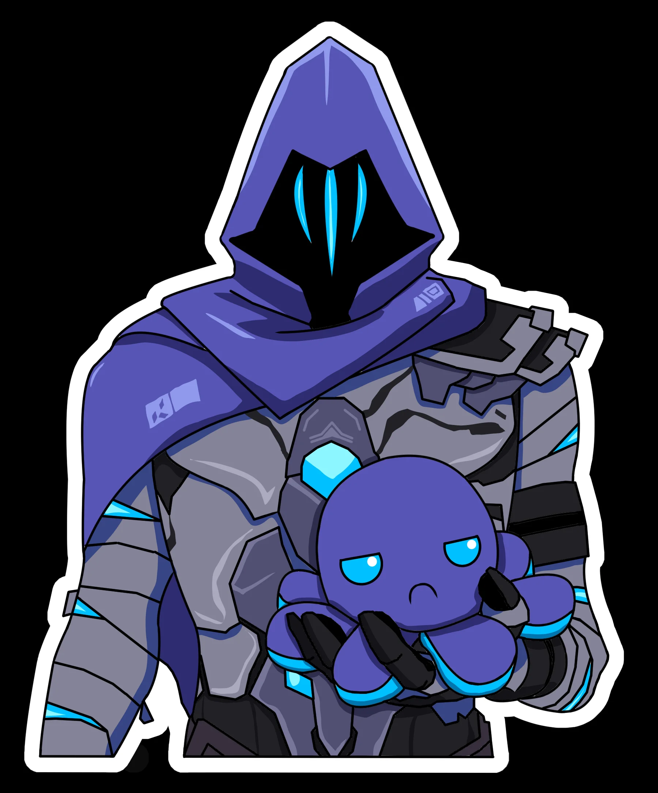

OMEN
Omen é um agente controlador em Valorant, conhecido por suas habilidades de manipulação da visão e teletransporte, que o tornam eficaz em controlar o campo de batalha e confundir os inimigos. Ele é um personagem misterioso e fantasmagórico, com habilidades que incluem cegar inimigos, criar cortinas de fumaça e se teleportar pelo mapa.